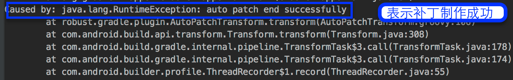

<!DOCTYPE html><html lang="null"><head><meta http-equiv="content-type" content="text/html; charset=utf-8"><meta content="width=device-width, initial-scale=1.0, maximum-scale=1.0, user-scalable=0" name="viewport"><meta content="yes" name="apple-mobile-web-app-capable"><meta content="black-translucent" name="apple-mobile-web-app-status-bar-style"><meta content="telephone=no" name="format-detection"><meta name="renderer" content="webkit"><title> - cyning</title><link type="text/css" rel="stylesheet" href="/css/basic.css?v=0.0.0"><link type="text/css" rel="stylesheet" href="/css/pure.css?v=0.0.0"><link type="text/css" rel="stylesheet" href="/css/style.css?v=0.0.0"><script type="text/javascript" src="//cdn.bootcss.com/jquery/1.11.0/jquery.min.js"></script><link rel="alternate" type="application/atom+xml" href="/atom.xml"></head></html><body><div class="body_container"><div id="header"><div class="site-name"><h1 class="hidden">cyning</h1><a id="logo" href="/.">cyning</a></div><div id="nav-menu"><div class="bitcron_nav"><div class="site_nav_wrap"><div class="site_nav"><span class="a_container"><a href="/.">首页</a></span><span class="a_container"><a href="/archives/">归档</a></span><span class="a_container"><a href="/about/">关于</a></span><span class="a_container"><a href="/atom.xml">订阅</a></span></div></div></div></div></div><div id="layout" class="pure-g"><div class="pure-u-1 pure-u-md-3-4"><div class="content_container"><div class="post"><h1 class="post-title"></h1><div class="post-content"><h1 id="Robust"><a href="#Robust" class="headerlink" title="Robust"></a>Robust</h1><p> <a href="https://github.com/Meituan-Dianping/Robust/releases" target="_blank" rel="external"></a><br> <a href="https://github.com/Meituan-Dianping/Robust/pulls" target="_blank" rel="external"></a><br> <a href="https://raw.githubusercontent.com/Meituan-Dianping/Robust/master/LICENSE" target="_blank" rel="external"></a>  </p>
<p> 新一代热更新系统Robust，对Android版本无差别兼容。无需发版就可以做到随时修改线上bug，快速对重大线上问题作出反应，补丁修补成功率高达99.9%。</p>
<p> <a href="README.md">English Introduction</a></p>
<h1 id="环境"><a href="#环境" class="headerlink" title="环境"></a>环境</h1><ul>
<li>Mac Linux Windows</li>
<li>Gradle 2.10+ </li>
<li>Java 1.7 +</li>
</ul>
<h1 id="使用方法"><a href="#使用方法" class="headerlink" title="使用方法"></a>使用方法</h1><ol>
<li><p>在App的build.gradle，加入如下依赖</p>
<figure class="highlight java"><table><tr><td class="gutter"><pre><div class="line">1</div><div class="line">2</div><div class="line">3</div><div class="line">4</div><div class="line">5</div><div class="line">6</div><div class="line">7</div></pre></td><td class="code"><pre><div class="line">apply plugin: <span class="string">'com.android.application'</span></div><div class="line"><span class="comment">//制作补丁时将这个打开，auto-patch-plugin紧跟着com.android.application</span></div><div class="line"><span class="comment">//apply plugin: 'auto-patch-plugin'</span></div><div class="line">apply plugin: <span class="string">'robust'</span></div><div class="line">	</div><div class="line">	</div><div class="line">compile <span class="string">'com.meituan.robust:robust:0.3.8'</span></div></pre></td></tr></table></figure>
</li>
<li><p>在整个项目的build.gradle加入classpath</p>
<figure class="highlight java"><table><tr><td class="gutter"><pre><div class="line">1</div><div class="line">2</div><div class="line">3</div><div class="line">4</div><div class="line">5</div><div class="line">6</div><div class="line">7</div><div class="line">8</div><div class="line">9</div></pre></td><td class="code"><pre><div class="line"> buildscript &#123;</div><div class="line">    repositories &#123;</div><div class="line">        jcenter()</div><div class="line">    &#125;</div><div class="line">    dependencies &#123;</div><div class="line">         classpath <span class="string">'com.meituan.robust:gradle-plugin:0.3.8'</span></div><div class="line">         classpath <span class="string">'com.meituan.robust:auto-patch-plugin:0.3.8'</span></div><div class="line">   &#125;</div><div class="line">&#125;</div></pre></td></tr></table></figure>
</li>
</ol>
<ol>
<li>需要在项目的src同级目录下配置部分配置robust.xml文件，具体项请参考<strong>app/robust.xml</strong>，在这里面有多个配置项。</li>
</ol>
<h1 id="优势"><a href="#优势" class="headerlink" title="优势"></a>优势</h1><ul>
<li>支持Android2.3-7.X版本</li>
<li>高兼容性、高稳定性，修复成功率高达三个九</li>
<li>补丁下发立即生效，不需要重新启动</li>
<li>支持方法级别的修复，包括静态方法</li>
<li>支持增加方法和类</li>
<li>支持ProGuard的混淆、内联、优化等操作</li>
</ul>
<p>需要保存打包时生成的mapping文件以及<strong>build/outputs/robust/methodsMap.robust</strong>文件。</p>
<h1 id="AutoPatch"><a href="#AutoPatch" class="headerlink" title="AutoPatch"></a>AutoPatch</h1><p>Robust补丁自动化，为Robust自动生成补丁，使用者只需要提交修改完bug后的代码，运行和线上apk打包同样的gradle命令即可，会在项目的app/build/outputs/robust目录下生成补丁。更多自动化补丁信息请参考：<a href="http://tech.meituan.com/android_autopatch.html" target="_blank" rel="external">Android热更新方案Robust开源，新增自动化补丁工具</a> 。</p>
<h1 id="使用方法-1"><a href="#使用方法-1" class="headerlink" title="使用方法"></a>使用方法</h1><ol>
<li><p>使用插件时，需要把auto-patch-plugin放置在com.android.application插件之后，其余插件之前。</p>
 <figure class="highlight java"><table><tr><td class="gutter"><pre><div class="line">1</div><div class="line">2</div></pre></td><td class="code"><pre><div class="line">apply plugin: <span class="string">'com.android.application'</span></div><div class="line">apply plugin: <span class="string">'auto-patch-plugin'</span></div></pre></td></tr></table></figure>
</li>
<li><p>将保存下来的mapping文件和methodsMap.robust文件放在app/robust/文件夹下。</p>
</li>
<li><p>修改代码，在改动的方法上面添加<figure class="highlight plain"><table><tr><td class="gutter"><pre><div class="line">1</div><div class="line">2</div><div class="line">3</div><div class="line">4</div><div class="line">5</div><div class="line">6</div><div class="line">7</div><div class="line">8</div><div class="line">9</div><div class="line">10</div><div class="line">11</div></pre></td><td class="code"><pre><div class="line"></div><div class="line">```java</div><div class="line">   @Modify</div><div class="line">    protected void onCreate(Bundle savedInstanceState) &#123;</div><div class="line">        super.onCreate(savedInstanceState);</div><div class="line">     &#125;</div><div class="line">     //或者是被修改的方法里面调用RobustModify.modify()方法</div><div class="line">     protected void onCreate(Bundle savedInstanceState) &#123;</div><div class="line">        RobustModify.modify()</div><div class="line">        super.onCreate(savedInstanceState);</div><div class="line">     &#125;</div></pre></td></tr></table></figure></p>
</li>
</ol>
<pre><code>新增的方法和字段使用`@Add`注解

<figure class="highlight java"><table><tr><td class="gutter"><pre><div class="line">1</div><div class="line">2</div><div class="line">3</div><div class="line">4</div><div class="line">5</div><div class="line">6</div><div class="line">7</div><div class="line">8</div><div class="line">9</div><div class="line">10</div><div class="line">11</div><div class="line">12</div></pre></td><td class="code"><pre><div class="line"><span class="comment">//增加方法</span></div><div class="line"><span class="meta">@Add</span></div><div class="line"><span class="function"><span class="keyword">public</span> String <span class="title">getString</span><span class="params">()</span> </span>&#123;</div><div class="line">    <span class="keyword">return</span> <span class="string">"Robust"</span>;</div><div class="line">&#125;</div><div class="line"><span class="comment">//增加类</span></div><div class="line"><span class="meta">@Add</span></div><div class="line"><span class="keyword">public</span> <span class="class"><span class="keyword">class</span> <span class="title">NewAddCLass</span> </span>&#123;</div><div class="line">    <span class="function"><span class="keyword">public</span> <span class="keyword">static</span> String <span class="title">get</span><span class="params">()</span> </span>&#123;</div><div class="line">       <span class="keyword">return</span> <span class="string">"robust"</span>;</div><div class="line">     &#125;</div><div class="line">&#125;</div></pre></td></tr></table></figure>
</code></pre><ol>
<li>运行和生成线上apk同样的命令，即可生成补丁，补丁目录app/build/outputs/robust/patch.jar</li>
<li>补丁制作成功后会停止构建apk，出现类似于如下的提示，表示补丁生成成功<br></li>
</ol>
<h1 id="样例使用："><a href="#样例使用：" class="headerlink" title="样例使用："></a>样例使用：</h1><ol>
<li><p>生成样例apk，执行gradle命令：</p>
 <figure class="highlight java"><table><tr><td class="gutter"><pre><div class="line">1</div></pre></td><td class="code"><pre><div class="line">./gradlew clean  assembleRelease --stacktrace --no-daemon</div></pre></td></tr></table></figure>
</li>
<li><p>安装生成的apk。保存mapping.txt文件以及app/build/outputs/robust/methodsMap.robust文件</p>
</li>
<li>修改代码之后，加上<strong>@Modify</strong>注解或者调用指定的方法</li>
<li>把保存的<strong>mapping.txt</strong>和<strong>methodsMap.robust</strong>放到app/robust目录下</li>
<li><p>执行和打包相同的gradle命令：</p>
 <figure class="highlight java"><table><tr><td class="gutter"><pre><div class="line">1</div></pre></td><td class="code"><pre><div class="line">./gradlew clean  assembleRelease --stacktrace --no-daemon</div></pre></td></tr></table></figure>
</li>
<li><p>补丁制作成功后会停止构建apk，出现类似于如下的提示,表示补丁生成成功<br></p>
</li>
<li><p>将补丁文件copy到手机上：</p>
 <figure class="highlight java"><table><tr><td class="gutter"><pre><div class="line">1</div></pre></td><td class="code"><pre><div class="line">adb push /Users/zhangmeng/Desktop/code/robust/app/build/outputs/robust/patch.jar /sdcard/robust/patch.jar</div></pre></td></tr></table></figure>
<p> 手机上补丁的路径是<code>PatchManipulateImp</code>中指定的</p>
</li>
<li>打开App，点击Patch按钮就会加载补丁。</li>
<li>也可以加载app/robust的样例补丁，修改了Jump_second_Activity跳转Activity的显示文字。</li>
<li><p>在样例中我们给类<figure class="highlight plain"><figcaption><span>meituan)```制作补丁，你可以自行定制。</span></figcaption><table><tr><td class="gutter"><pre><div class="line">1</div><div class="line">2</div><div class="line">3</div><div class="line">4</div><div class="line">5</div><div class="line">6</div><div class="line">7</div><div class="line">8</div><div class="line">9</div><div class="line">10</div></pre></td><td class="code"><pre><div class="line"></div><div class="line"># 注意事项</div><div class="line"></div><div class="line">1. 内部类的构造方法是private（private会生成一个匿名的构造函数）时，需要在制作补丁过程中手动修改构造方法的访问域为public</div><div class="line">2. 对于方法的返回值是this的情况现在支持不好，比如builder模式，但在制作补丁代码时，可以通过如下方式来解决，增加一个类来包装一下(如下面的B类)，</div><div class="line"></div><div class="line">	```java</div><div class="line">	method a()&#123;</div><div class="line">	  return this;</div><div class="line">	&#125;</div></pre></td></tr></table></figure></p>
<p>改为</p>
<figure class="highlight java"><table><tr><td class="gutter"><pre><div class="line">1</div><div class="line">2</div><div class="line">3</div></pre></td><td class="code"><pre><div class="line"><span class="function">method <span class="title">a</span><span class="params">()</span></span>&#123;</div><div class="line">  <span class="keyword">return</span> <span class="keyword">new</span> B().setThis(<span class="keyword">this</span>).getThis();</div><div class="line">&#125;</div></pre></td></tr></table></figure>
</li>
<li><p>字段增加能力内测中，不过暂时可以通过增加新类，把字段放到新类中的方式来实现字段增加能力</p>
</li>
<li>新增的类支持包括静态内部类和非内部类</li>
<li>对于只有字段访问的函数无法直接修复，可通过调用处间接修复</li>
<li>构造方法的修复内测中</li>
<li>资源和so的修复内测中</li>
<li>更多的信息，请访问我们的<a href="https://github.com/Meituan-Dianping/Robust/wiki" target="_blank" rel="external">Wiki</a></li>
</ol>
<h2 id="License"><a href="#License" class="headerlink" title="License"></a>License</h2><pre><code>Copyright 2017 Meituan-Dianping

Licensed under the Apache License, Version 2.0 (the &quot;License&quot;);
you may not use this file except in compliance with the License.
You may obtain a copy of the License at

   http://www.apache.org/licenses/LICENSE-2.0

Unless required by applicable law or agreed to in writing, software
distributed under the License is distributed on an &quot;AS IS&quot; BASIS,
WITHOUT WARRANTIES OR CONDITIONS OF ANY KIND, either express or implied.
See the License for the specific language governing permissions and
limitations under the License.
</code></pre></div></div><div id="uyan_frame"></div><script src="http://v2.uyan.cc/code/uyan.js?uid=2130870" type="text/javascript"></script></div></div><div class="pure-u-1-4"><div id="sidebar"><div class="widget"><form action="//www.baidu.com/baidu" method="get" accept-charset="utf-8" id="search" target="_blank" class="search-form"><input type="search" name="word" maxlength="20" placeholder="Search"/><input type="hidden" name="si" value="http://ownwell.github.io"/><input name="tn" type="hidden" value="bds"/><input name="cl" type="hidden" value="3"/><input name="ct" type="hidden" value="2097152"/><input name="s" type="hidden" value="on"/></form></div><div class="widget"><div class="widget-title"> 分类</div><ul class="category-list"><li class="category-list-item"><a class="category-list-link" href="/categories/Android/">Android</a><span class="category-list-count">21</span></li><li class="category-list-item"><a class="category-list-link" href="/categories/Android热修复/">Android热修复</a><span class="category-list-count">1</span></li><li class="category-list-item"><a class="category-list-link" href="/categories/Java/">Java</a><span class="category-list-count">3</span></li><li class="category-list-item"><a class="category-list-link" href="/categories/Java源码/">Java源码</a><span class="category-list-count">1</span></li><li class="category-list-item"><a class="category-list-link" href="/categories/Python/">Python</a><span class="category-list-count">1</span></li><li class="category-list-item"><a class="category-list-link" href="/categories/Tools/">Tools</a><span class="category-list-count">11</span></li><li class="category-list-item"><a class="category-list-link" href="/categories/生活/">生活</a><span class="category-list-count">1</span></li><li class="category-list-item"><a class="category-list-link" href="/categories/编程/">编程</a><span class="category-list-count">5</span></li><li class="category-list-item"><a class="category-list-link" href="/categories/读书/">读书</a><span class="category-list-count">1</span></li></ul></div><div class="widget"><div class="widget-title"> 标签</div><div class="tagcloud"><a href="/tags/Tomcat/" style="font-size: 12px;">Tomcat</a> <a href="/tags/Android/" style="font-size: 18px;">Android</a> <a href="/tags/Mac/" style="font-size: 12px;">Mac</a> <a href="/tags/CodeStyle/" style="font-size: 12px;">CodeStyle</a> <a href="/tags/IDEA/" style="font-size: 12px;">IDEA</a> <a href="/tags/Android源码/" style="font-size: 12px;">Android源码</a> <a href="/tags/Material/" style="font-size: 12px;">Material</a> <a href="/tags/Google/" style="font-size: 12px;">Google</a> <a href="/tags/Git/" style="font-size: 13.5px;">Git</a> <a href="/tags/Sublime-Text/" style="font-size: 12px;">Sublime Text</a> <a href="/tags/Python/" style="font-size: 16.5px;">Python</a> <a href="/tags/抓包/" style="font-size: 12px;">抓包</a> <a href="/tags/Transition/" style="font-size: 12px;">Transition</a> <a href="/tags/Animations/" style="font-size: 12px;">Animations</a> <a href="/tags/翻译/" style="font-size: 12px;">翻译</a> <a href="/tags/生活/" style="font-size: 12px;">生活</a> <a href="/tags/Tools/" style="font-size: 16.5px;">Tools</a> <a href="/tags/JavaEE/" style="font-size: 12px;">JavaEE</a> <a href="/tags/Ruby/" style="font-size: 12px;">Ruby</a> <a href="/tags/Jenkins/" style="font-size: 12px;">Jenkins</a> <a href="/tags/Java/" style="font-size: 15px;">Java</a> <a href="/tags/多渠道/" style="font-size: 12px;">多渠道</a> <a href="/tags/python/" style="font-size: 12px;">python</a> <a href="/tags/UI/" style="font-size: 12px;">UI</a> <a href="/tags/《Android开发艺术探索》读书笔记/" style="font-size: 12px;">《Android开发艺术探索》读书笔记</a> <a href="/tags/View/" style="font-size: 12px;">View</a> <a href="/tags/JCenter/" style="font-size: 12px;">JCenter</a> <a href="/tags/闲言碎语/" style="font-size: 12px;">闲言碎语</a> <a href="/tags/Realm/" style="font-size: 12px;">Realm</a> <a href="/tags/hot-fix/" style="font-size: 12px;">hot-fix</a> <a href="/tags/Android热修复/" style="font-size: 12px;">Android热修复</a> <a href="/tags/设计模式/" style="font-size: 12px;">设计模式</a> <a href="/tags/单例/" style="font-size: 12px;">单例</a></div></div><div class="widget"><div class="widget-title"> 最新文章</div><ul class="post-list"><li class="post-list-item"><a class="post-list-link" href="/2017/05/24/Robust热修复-入门使用/">Robust热修复-使用和项目介绍</a></li><li class="post-list-item"><a class="post-list-link" href="/2017/04/13/Android-状态栏颜色的适配/">【Android】状态栏颜色的适配</a></li><li class="post-list-item"><a class="post-list-link" href="/2016/12/04/classloader/">Classloader源码探究</a></li><li class="post-list-item"><a class="post-list-link" href="/2016/09/30/热修复之美团方案/">热修复之美团方案</a></li><li class="post-list-item"><a class="post-list-link" href="/2016/08/30/android-hot-fix-introduce/">Android热修复--实现原理</a></li><li class="post-list-item"><a class="post-list-link" href="/2016/08/26/android-status-bar/">Android下多彩的StatusView的实现</a></li><li class="post-list-item"><a class="post-list-link" href="/2016/08/17/git-work-flow/">Gitflow工作流</a></li><li class="post-list-item"><a class="post-list-link" href="/2016/08/11/Anroid沉浸式状态栏/">Anroid沉浸式状态栏</a></li><li class="post-list-item"><a class="post-list-link" href="/2016/07/28/realm-note/">Realm分享直播笔记</a></li><li class="post-list-item"><a class="post-list-link" href="/2016/07/27/thinking-in-2016-07/">年中思考</a></li></ul></div><div class="widget"><div class="widget-title"> 友情链接</div><ul class="links-list"><li class="links-list-item"><a href="http://www.example.com" title="标题" target="_blank">标题</a></li></ul></div></div></div></div><div id="footer">© <a href="/." rel="nofollow">cyning.</a> Powered by<a rel="nofollow" target="_blank" href="https://hexo.io"> Hexo.</a> Theme<a target="_blank" href="https://github.com/7ye/maupassant-hexo"> Maupassant.</a></div><a id="back_to_top" href="javascript:void(0)" class="back_to_top"><span>△</span></a><script type="text/javascript" src="/js/totop.js?v=0.0.0"></script><link rel="stylesheet" href="/css/jquery.fancybox.css"><script type="text/javascript" src="//cdn.bootcss.com/fancybox/2.1.5/jquery.fancybox.pack.js"></script><script type="text/javascript" src="/js/fancybox.js?v=0.0.0"></script><script>var _hmt = _hmt || [];
(function() {
  var hm = document.createElement("script");
  hm.src = "//hm.baidu.com/hm.js?c01cc8a847f9091e2448fb88ca55ceae";
  var s = document.getElementsByTagName("script")[0];
  s.parentNode.insertBefore(hm, s);
  })();
</script><script>function auto_code_fit(){
  if($(".highlight").length != 0){
    var pc_width = $(".post-content").width();
    $(".highlight .code").find("pre").width((pc_width-70)+"px");
  }
}
window.onresize = function(){
  auto_code_fit();
}
auto_code_fit();</script></div></body>